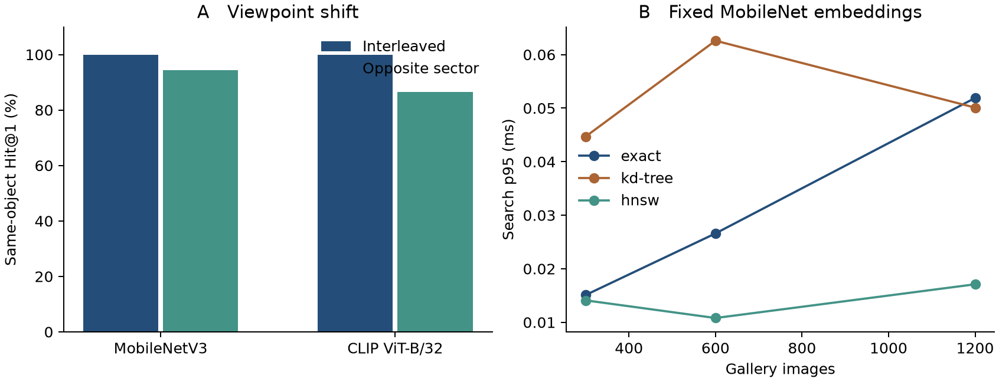

Visual Product Search
Search a small illustrated catalog with a product sample or your own photo. Images are processed in your browser.
Query
Loading catalog…
Ranked results
Benchmark

The public demo uses original illustrations. Encoder and index measurements use held-out real photographs in COIL-100.
Methods and results · Fashion-MNIST benchmark